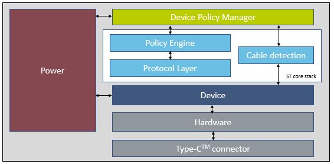

Release Notes for X-CUBE-USBPDM1
Copyright © 2020 STMicroelectronics
Copyright © 2020 STMicroelectronics
This software package is licensed by ST under ST license SLA0048, the "License"; You may not use this package except in compliance with the License. You may obtain a copy of the License at:
The X-CUBE-USBPDM1 software package is an expansion for STM32Cube.

This software provides is a USB-IF certified Expansion Package and consists of libraries, drivers, sources, APIs and application example running on STM32G0 Series microcontrollers.
Check the ST web page : USB Type-C and Power Delivery for more details.The figure below shows the overall architecture.

Here is the list of references to user documents:
| Name | Version | License | Document |
|---|---|---|---|
| PD core stack library | 3.0.0 | SLA0044 | Release Note |
| G0 Devices | 3.0.0 | SLA0044 | Release Note |
| Name | Version | License | Document |
|---|---|---|---|
| STM32G0xx CMSIS | 1.3.0 | BSD-3-Clause | Release notes |
| STM32G4xx CMSIS | 1.2.0RC1 | Apache-2.0 | Release notes |
| STM32G0xx HAL | 1.3.0 | BSD-3-Clause | Release notes |
| STM32G4xx HAL | 1.2.0RC1 | BSD-3-Clause | Release notes |
| Name | Version | License | Document |
|---|---|---|---|
| TRACER_EMB | 1.3.0 | BSD-3-Clause | Release Note |
| GUI_INTERFACE | 1.10.0 | BSD-3-Clause | Release Note |
| Name | Version | License | Document |
|---|---|---|---|
| X-NUCLEO-USBPDM1 | 1.0.0 | BSD-3-Clause | Release Note |
| STM32G0xx_Nucleo BSP | 1.1.0 | BSD-3-Clause | Release Note |
| STM32G4xx_Nucleo BSP | 1.0.0 | BSD-3-Clause | Release Note |